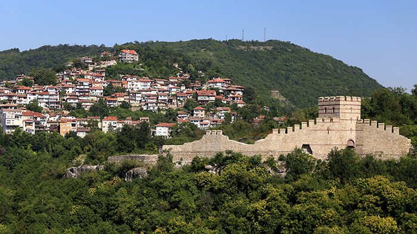

Veliko Tarnovo
One of Bulgaria’s oldest towns, Veliko Tarnovo has as its centrepiece the magnificent restored Tsarevets Fortress, citadel of the Second Bulgarian Empire.
One of Bulgaria’s oldest towns, Veliko Tarnovo has as its centrepiece the magnificent restored Tsarevets Fortress, citadel of the Second Bulgarian Empire.
The capital of Bulgaria is full of surprises, from the yellow brick roads in its historic center to the partially exposed, 1,800-year-old Roman city that lies beneath.
" Pirin National Park " is best known for the 70 glacial lakes, but also it can be seen a variety of wild animals.
Plovdiv have been inhabited for 8,000 years, making it one of the oldest cities in the world. The Ancient Thracians were in control for a couple of thousand years before the Romans took over and constructed monuments that are still being dug up today.
The origin of the name Rila comes from the Thracians, it means ' well-watered mountain '. The relief of Rila is typically alpine and 200 glacial lakes are situated in the mountain.
The Bulgarian Black Sea Coast covers the entire eastern bound of Bulgaria stretching from the Romanian Black Sea resorts in the north to European Turkey in the south, along 235 miles of coastline.
It’s thought that in the past the hill was used for rituals and soothsaying. It is a legend that at Perperikon has it foretold the rise of both Alexander the Great and Imperial Rome under Augustus.
The Belogradchik Rocks are one of the natural wonders of Bulgaria. These huge reddish limestone and sandstone rocks tower over the small town of Belogradchik and form part of the walls of the Belogradchik Fortress.
Thanks to its cultural heritage and well preserved houses, it looks like a museum village. Walking around the cobblestone streets, you can really feel a sense of the past.
Varna is often referred to as the sea capital of Bulgaria. The oldest gold treasure in the world (6k years-old) is on display at the city’s archaeology museum